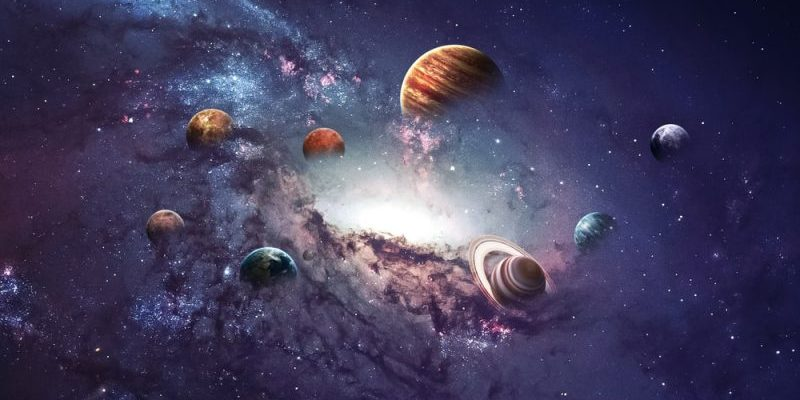

O que é o Super El Niño?
Entenda como o aquecimento das águas do Oceano Pacífico muda o clima e afeta o dia a dia no Brasil.

Entenda como o aquecimento das águas do Oceano Pacífico muda o clima e afeta o dia a dia no Brasil.

Descubra como grandes nuvens de gás e poeira no espaço se juntam para formar novas estrelas brilhantes.
Veja o que os cientistas da astrobiologia procuram em outros planetas e luas do nosso Sistema Solar.